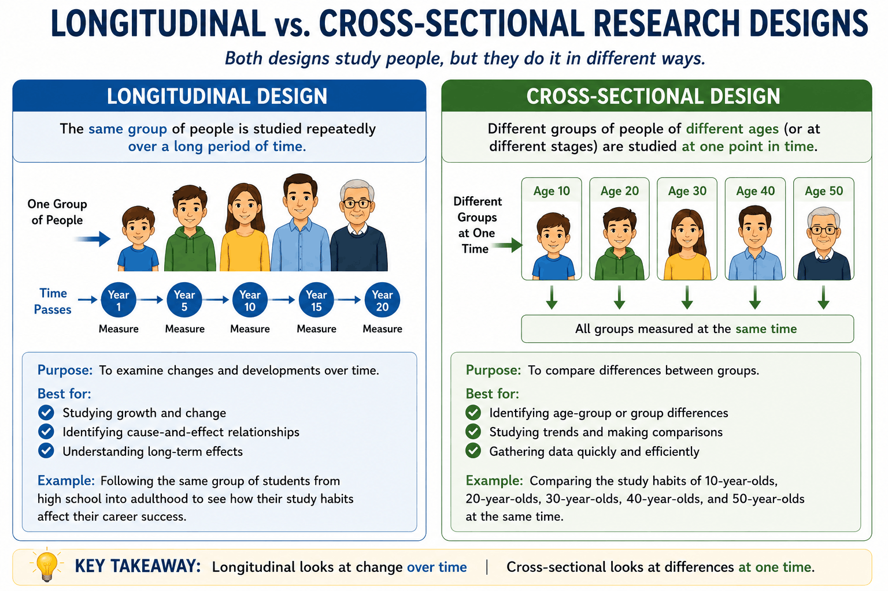

Unit 3: Development and Learning
Topic 3.1: Themes and Methods in Developmental Psychology
Last Updated: July 2, 2026
The Big Picture: Growing Up and Changing Minds
Welcome to Unit 3! As with the other content units, this unit represents a 15-25% weighting of the AP Exam. Development and learning are fundamentally about growth and change. In Units 1 and 2, we looked at the biology of the brain and how it processes information. Now, we are going to look at how biological, cognitive, and environmental factors come together to influence growth throughout the entire lifespan. While the most noticeable changes happen from birth to age 18, people continue to grow and develop throughout their whole lives.
1. The Three Enduring Themes of Development
Developmental psychology is concerned with both the chronological order of development and the thematic issues that span across a lifetime. As psychologists study how humans grow, they continually circle back to three primary thematic issues:
- Nature vs. Nurture: How much of our behavior is driven by our genetic inheritance and biology (nature)? And how much is driven by our environment, experiences, culture, and learning (nurture)? It is almost always a complex interaction of both!
- Continuous vs. Discontinuous Development: Does development happen gradually and smoothly over time with small incremental changes (continuous)? Or do we grow in distinct, abrupt stages with clear shifts between phases of growth (discontinuous)?
- Stability vs. Change: Do our early personality traits persist through life, or do we become entirely different people as we age? Some traits, like general temperament, remain relatively stable throughout life. Other aspects, such as memory retention, sensory acuity, and social attitudes, fluctuate heavily with age.
2. How We Study Development (The Methods)
To figure out how humans change over time, developmental psychologists rely heavily on two specific research design methods to control for variables like maturation:
- Cross-Sectional Studies: This method compares individuals of different ages at one single point in time. For example, giving a memory test to a group of 20-year-olds, a group of 40-year-olds, and a group of 60-year-olds on the same day. It is fast, cheap, and gives immediate results.
- Longitudinal Studies: This method follows the same individuals over a long period of time to observe changes. For example, testing a group's memory when they are 20, waiting two decades to test them again at 40, and waiting again to test them at 60. This provides incredibly accurate developmental data, but it is highly expensive, takes years to complete, and runs the risk of participants dropping out.

Visualizing Research Designs. A cross-sectional study captures a quick snapshot of different age groups at a single point in time, while a longitudinal study tracks the exact same group of individuals as they age over a period of years.
3. Level Up Your Score: Welcome to Unit 3
Kick off your Unit 3 studying the right way! Begin familiarizing yourself with the foundational themes and research methods using our interactive review tools:
- Flashcard Drill: Head to our Flashcards and pull up the "Unit 3" deck to start memorizing the difference between continuous and discontinuous development.
- Unit 3 Quiz: Test your understanding of cross-sectional and longitudinal designs with our adaptive quiz.
- Make the Links: Play Connections to see how early Unit 3 terms interact with the concepts you just mastered in Unit 2!